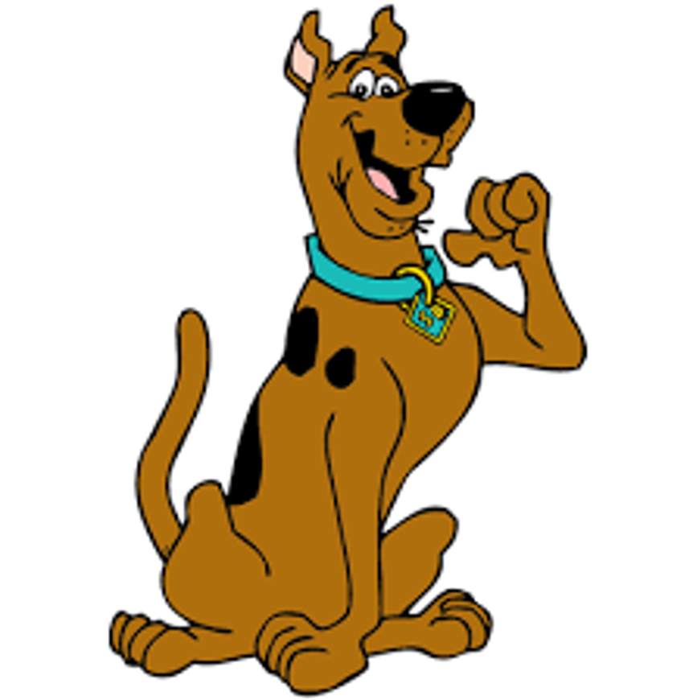

Scoobert "Scooby" Doo é um cão dinamarquês de 7 anos que foi comprado pela turma (Fred Jones, Daphne Blake, Velma Dinkley e Salsicha Rogers) quando ainda era um filhote. Cuidar do cão ficou como trabalho de Salsicha, e os dois são melhores amigos, até hoje e juntos, desvendam mistérios.

Se quiser ver um trailer sobre o filme, Clique aqui